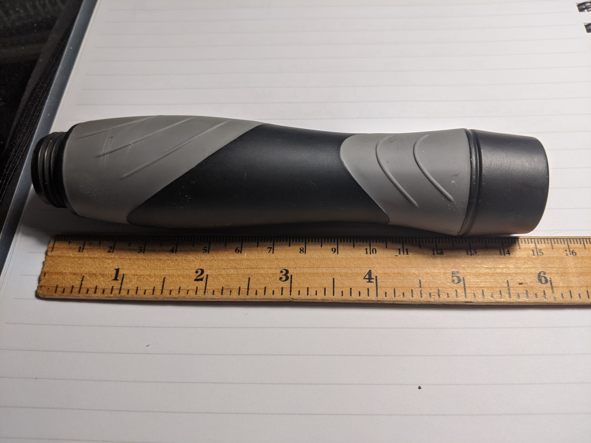
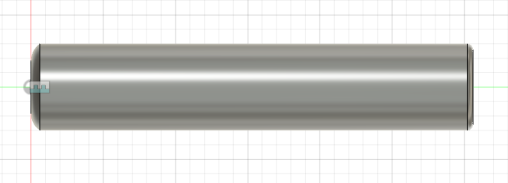
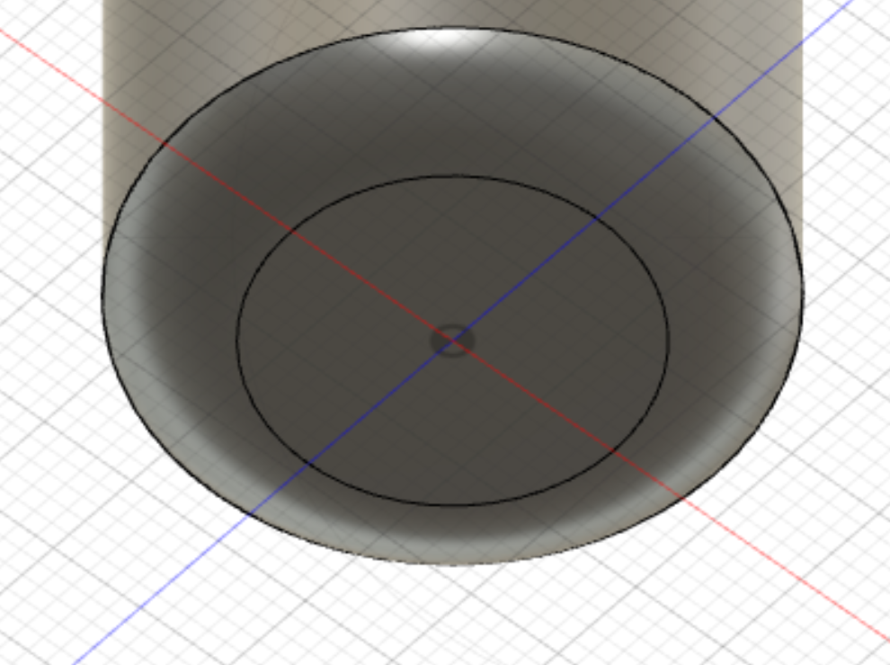
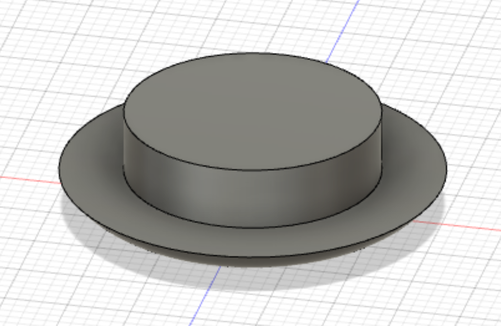
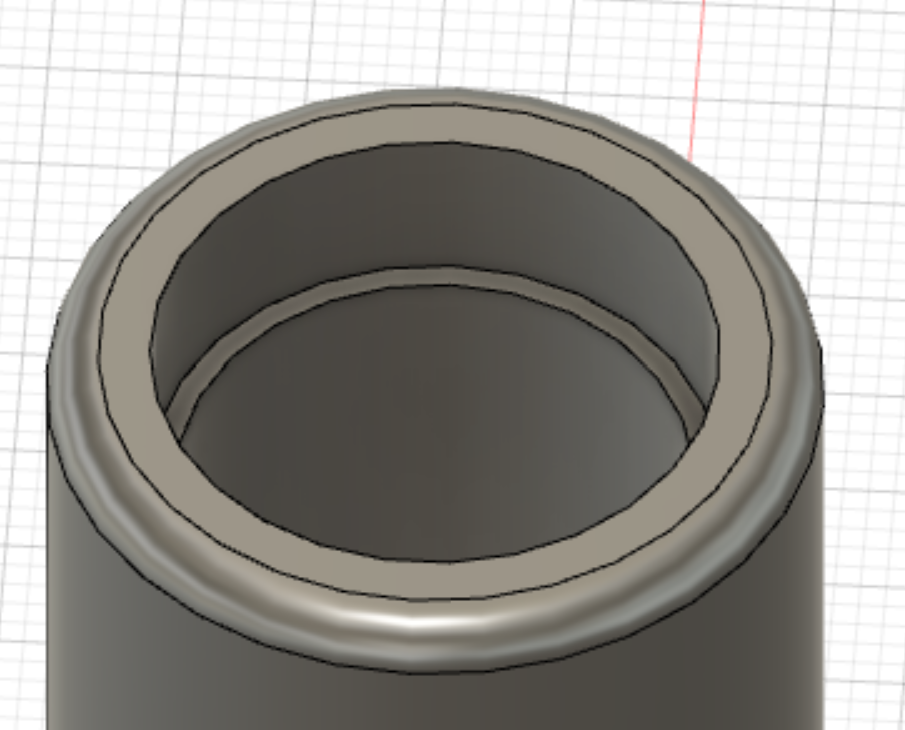
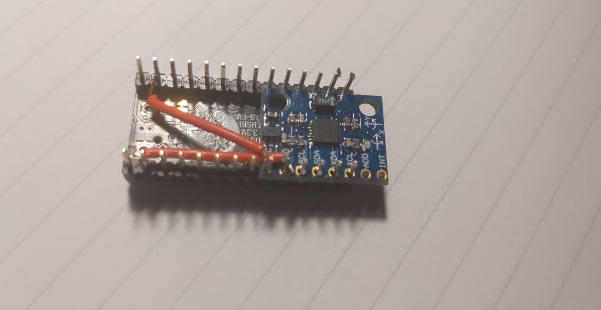
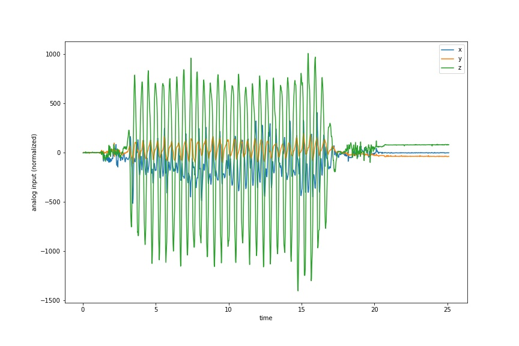
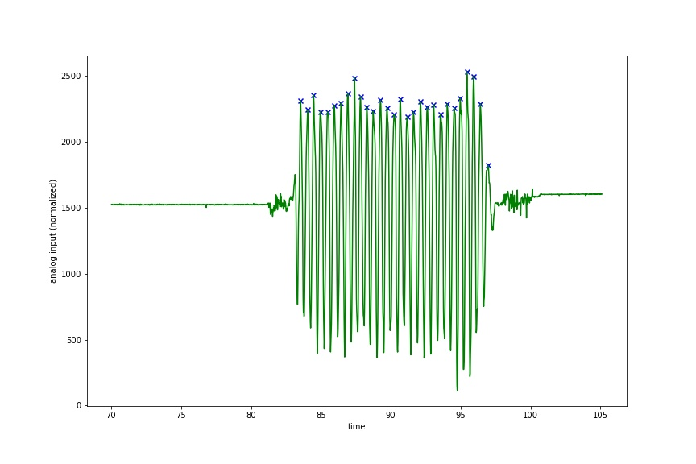

Workout Tracking
Expanding on the force sensor I built last week, for my final project, I will be building a smart jump rope. While this is a produce that does exist, I am not satisfied with what is out there. Many of these products are simple mechanical counters and others are much more complicated, flashing a strip of LEDs in the air as you swing so you can see your repetitions. The former does not provide all of the features I want out of smart workout equipment and the latter is poorly designed/expensive.
I would like a product that can measure the frequency of jumps and intensity of my workouts, and track progress over time. There are several things I will need to build for this that will combine what I have learned about 3D modeling and print, sensors, wireless communication/IoT, and APIs/programming. The end product will consist of an microcontroller circuit in a custom built handle for my jump rope that records information throughout my workout. After the workout is complete, which I will indicate with a button press, the information will be transmitted to my phone where it will be loaded into an app that backs this data up to a database.
Here’s a list of what I will need for the project (a bill of materials):
- 3D printed housing
- Huzzah ESP32 board
- Accelerometer/gyroscope
- Infrared LED
- Other miscellaneous components (wires, resistors, etc.). This will become clear as I fully flesh out the circuit
Data will be read from the accelerometer to determine how the rope is moving (to detect frequency of swings, number of swings, double unders, cross overs, etc.), while the Infrared LED can be used for heart rate monitoring as shown here.
Housing
This week I will start out by designing the housing for my project. I already have a hollow jump rope handle but it is not quite large enough to house the esp32 board, which will be necessary for wireless communication. I will use this handle to gather data using the ItsyBitsy (which it is barely large enough to house). After I’ve gathered data, I will be able to program everything and create slightly large 3D printed housing for the Huzzah Esp32.
To construct appropriate housing, I used parametric design in Fusion 360. The handle itself measured about 150mm:

This handle has an ergonomic design that is nice to hold, and a screw on cap on the left hand end that can be unscrewed to insert weights. A bearing sits in the right hand end for smooth turning of the jump rope. When modeling, I had to keep in mind the inner and outer diameters of the handle as well, which I measured at (approximately) 20mm and 30mm respectively. I also looked up the bearing model which was a 608zz bearing measuring 8x22x7, for inner diameter, outer diameter, and width respectively.
Finally, I measured the limiting dimensions of the Huzzah, ItsyBitsy and accelerometer boards:
Note that the board cannot site directly at the diameter either because of the header pins. It will take a little bit of trigonometry to figure out what inner diameter I should use in my own handle for both the itsy bitsy and the feather.
To begin with, I designed the general shape in fusion, with flexibility to change parameters after doing calculations. I did not make the design very ergonomic to begin with and focused on the bare MVP for a first prototype:

At the left end, I have a removable, press fit cap:  
The other end of the handle has an inset for the bearing:

The insets and fillets here make this piece best created by 3D printing.
Accelerometer Data
This week I ordered a bearing and sent the casing print file to my friend. While waiting for these parts to make the full casing, I put together a smaller circuit using the ItsyBitsy instead of the Huzzah.
The MPU6050 uses I2C communication, so I needed to connect the SCL and SDA pins to the ItsyBitsy’s corresponding pins and also needed to connect VCC and ground. Besides this, there wasn’t anything I needed to connect. For space purposes I decided to solder the accelerometer directly to the IstyBitsy header pins and then solder wires within the header pins to VCC and ground:

I soldered as minimally as possible while maintaining a solid electrical connection on the header pins so that it would be easy to remove later. While this is a bit of a hacky solution for now, the circuit was able to gather data and wasn’t any larger than the ItsyBitsy itself, meaning it would fit into my current housing (my old jump rope handle).
While the circuit was able to gather data, the ItsyBitsy does not come
with a bluetooth or wifi module built in like the Huzzah, and so I had to
find a way to store the data on the ItsyBitsy. Luckily CircuitPython has
a storage
module and a package for interfacing with the MPU6050.
The storage module allows a program to write to the flash memory of the chip.
While there is not a ton of memory, the python os module is able to
check remaining disk space so I was able to make sure I didn’t run out. In
order to set up CircuitPython I first needed to copy a new bootloader to
run python code on the microcontroller. On their site they provide
a uf2
file that can just be copied directly on to the drive.
With everything installed, setting up the MPU6050 was as easy as
import board
import adafruit_mpu6050
i2c = busio.I2C(board.SCL, board.SDA)
mpu = adafruit_mpu6050.MPU6050(i2c)
print(mpu.acceleration)
but printing acceleration just once isn’t very useful.
I needed to combine this with the storage module to write a file.
CircuitPython storage writing is a little complicated. Basically, the
board can be in one of two modes at any given time. Either the script
code.py can write to device storage, or the computer connected to the
microcontroller can write to device storage. This can be configured in the
boot.py file that is run every time the computer is connected:
import storage
computer_has_write = False
storage.remount("/", computer_has_write)
Note that, if you add this boot.py file to your device and reconnect it
to your computer, you will now not be able to edit boot.py or code.py
because the computer does not have write privileges. How can we stop this
behavior then? By using the python REPL on the device we can issue
commands that will be run by the microcontroller to move the boot.py file:
>>> import os
>>> os.rename('boot.py', 'boot.old')
Note that you can access the python REPL for the device through the serial monitor using a program like screen on the appropriate serial port.
The process for uploading code has become a little more complicated with
this added step (normally you can just save changes to code.py), but it
is not overly cumbersome.
Now that we have access to device storage, we can write observations in a loop to a csv:
import time
import os
with open("/test.csv", "a") as fp:
i = 0
while True:
# Write out the data
line = (time.monotonic_ns(),) + mpu.acceleration + mpu.gyro
fp.write('{}\n'.format(','.join(str(a) for a in line)))
fp.flush()
# Make sure there is enough space left on device to continue
if os.statvfs("/")[4] < 20:
break
time.sleep(0.01)
This code prints out the time, acceleration, and gyro information at about 100 Hz, which should be more than enough to track movements of the handle at proper resolution to see jumps. This code should be wrapped in a try, except block to ensure that the device has write access when trying to open the file. This would allow for a more elegant handling of any error. The complete code I used, including the MPU6050 library and dependencies, can be found in this zip.
While this code worked well for many seconds while connected to my computer When I ran this code on the actual device, connected to a 5V battery, however, I encountered an inconsistent issue. Sometimes, the device would reset itself to the default CircuitPython “Hello, World!” program code. The first time this happened I lost all of my code and had to start again. I haven’t been able to determine whether this was because of writing to too much space, protected space, or something entirely different. I was able to collect data after several attempts and got the following:

This plot displays the x, y, and z acceleration over time. I used
a calibration period before the jumping to center the data at rest where
acceleration is 0 for all axes. The z axis seems to have the best signal
on the oscillations of the height of the handle, which is to be expected
given the jumping motion. The most accurate count would be to trace the
handles movement using all three directions of motion but for simplicity
I started looking at just the z data. I used the python libraries pandas
and scipy to do some very basic data analysis:
df = pd.read_csv('test.csv', delimiter='\t', header=None)
df.columns = ['time', 'x', 'y', 'z']
df['time'] /= 1000
df = df.set_index('time')
fig, ax = plt.subplots(figsize=(12, 8))
peaks = df.z.iloc[scipy.signal.find_peaks(df.z, prominence=350)[0]]
plt.scatter(peaks.index, peaks.values, marker='x', color='b')
df.z.plot(color='g')
which resulted in the following plot with peaks:

Overall there were 29 peaks, but I only jumped 15 times over this duration, suggesting some sort of double counting. If this double counting is consistent then these results are promising. Counting jumps should be straightforward from these oscillations. Now I have accomplished the circuit design and data gathering process. Next steps are refining this process, combining the housing with the board, and creating a bluetooth phone interface to communicate with the Huzzah board.